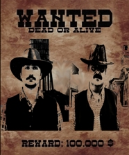

Cervantes Films es una productora ficticia
pensada para entretener a un público tán exigente como el
que más.
Cuatreros
David y John deberan afrontar el golpe de sus vidas, y lograr
llegar a la frontera.

Manuel Bueno, Jordi Soteras, Karina Cuelda,
Raúl Molina, Alejandro Layunta y José Ignacio Ramos
(Creador de las carátulas de Cervantes Films).